Drip Messaging : Send Sequencial Message to Messenger Bot Subscriber
A BOT Inboxer Add-on
- Created: 4th Sep 2018
- Latest update: 8th Nov 2018
- Contact Email: info@xeroneit.net
- Developed by : XerOne IT
What is Drip Messaging?
It is not a standalone app, get BOT Inboxer (standalone or add-on) to use this add-on.
How to Install?
- Drip Messaging is not a standalone app. As we already mentioned, it is an add-on of Bot Inboxer. So first requirement of installting Drip Messaging is to get & install Bot Inboxer (standalone or addon):
- Installting Drip Messaging is just few clicks easy.
- Login to your EZ Inboxer or Bot Inboxer Standalone admin panel, go to Add-ons menu and click Upload New Add-on and upload Drip Messaging Zip File.
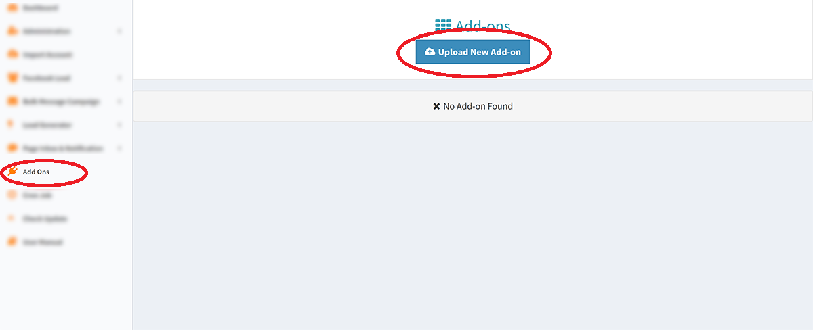
- Now add-on has been uploaded and all you need to do is to activate the add-on using the purchase code and it's done :)
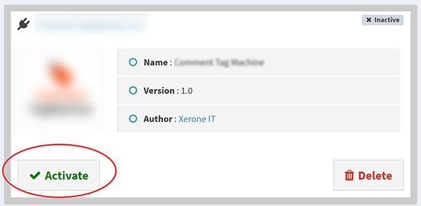
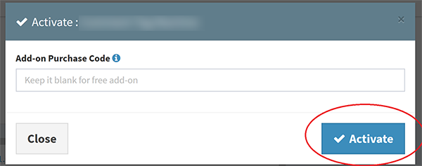
Facebook App Approval
Go to you page and click settings
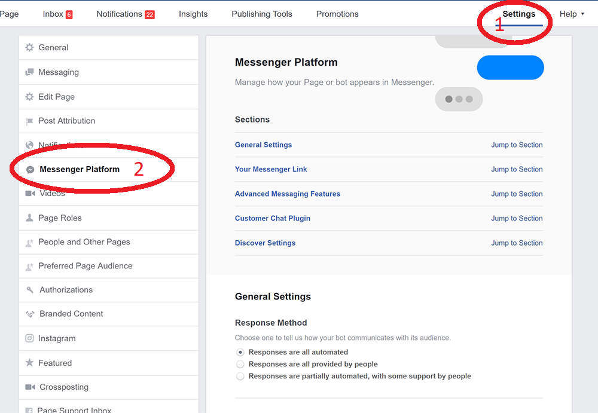
|
Scroll down and to advanced messaging features & click request 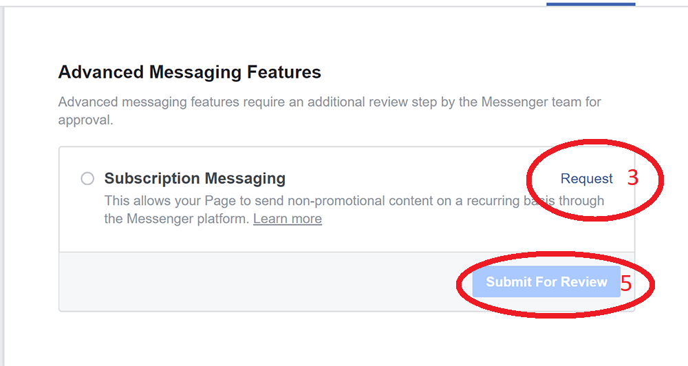 |
Fill the form follwing the video below and click submit for review 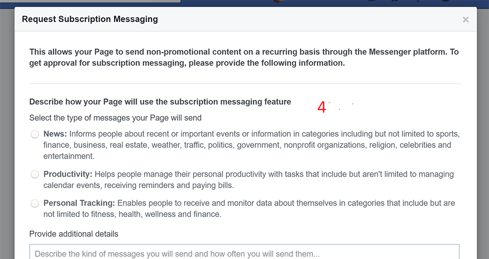 |
Subscription Messaging Approval Tutorial
Drip Messaging Setup
You can see your pages approval status, page message sent log and your bot subscriber list here.
Check Review Status: It will check if the page have subscription messaging permission or not.
Message sent log: This will show you list of all message sent from this page and also current status of messages.
Subscriber list: Here you see the subscriber list and see wich subscriber is under which drip campaign. Also you can assign campaign to a specific subscriber manually.
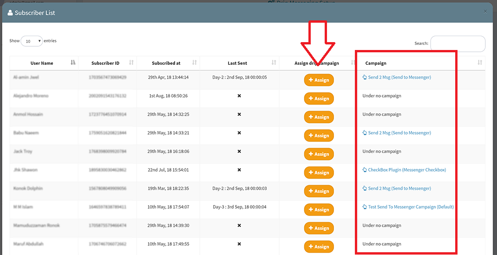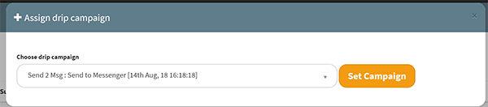
Drip Message Campaign List: Here you can see the exisiting campaigns of a specific page and can add/edit/delete campaign. The campaign list will also show detailed day-wise report of each campaign.
Add Camapign: Adding campaign is very easy , just choose campaign type and message template for the days you want. You can add upto 30 days. There are total 8 drip campaign types. Please note that if you do not have Messenger Engagement addon then you will only get two drip types : default & campaign. Every page must have default campaign and multiple default campaigns are not allowed. You can add multiple campaigns of other drip types. Custom drip campaigns can be useful for assign campaign to subscribers manually.
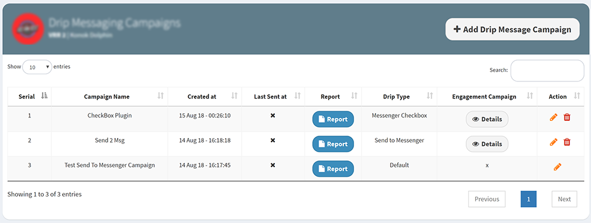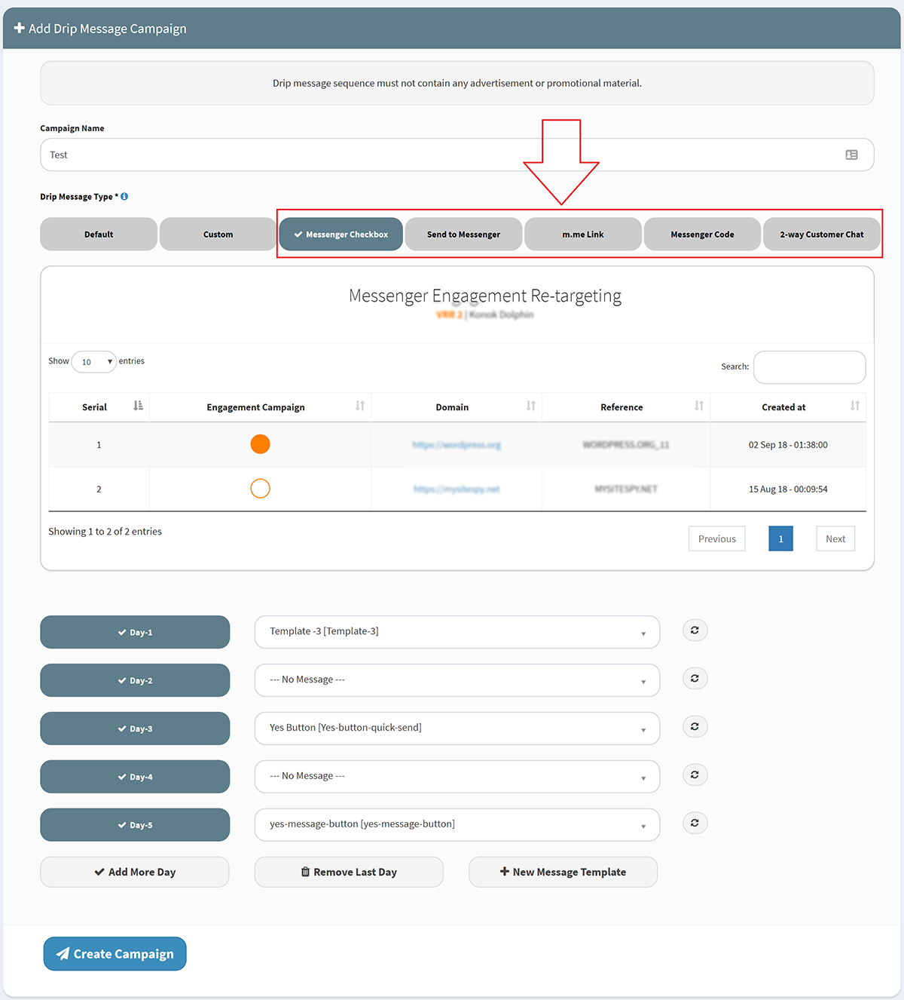
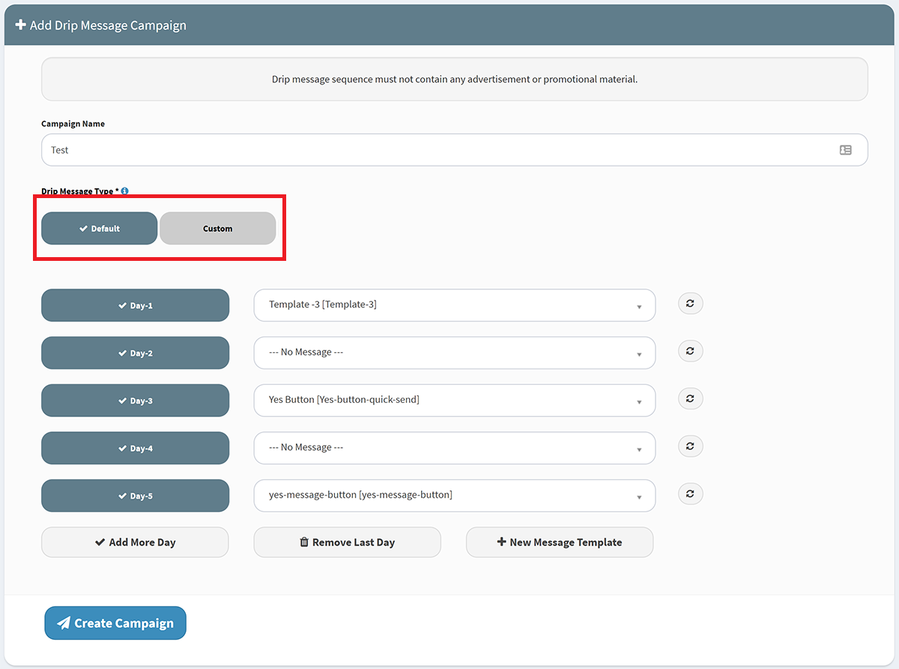
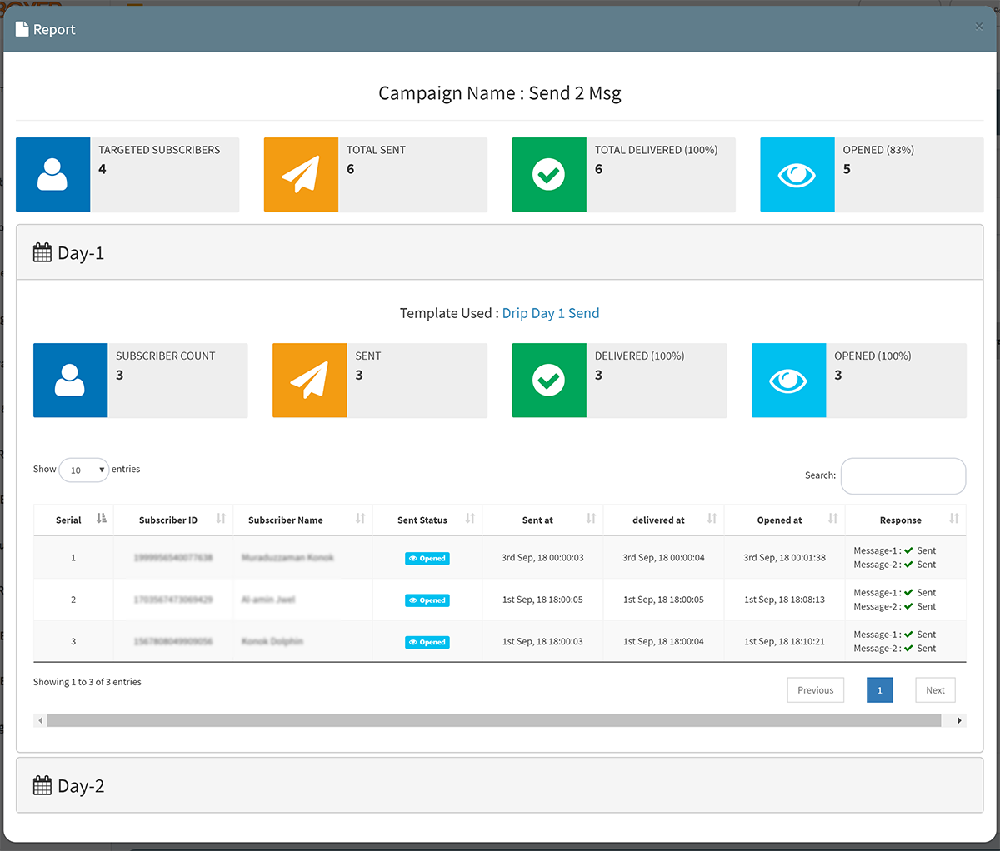
Message Sent Log
This will show you list of all message sent from all page and also current status of messages. You can filter by page and drip campaign.
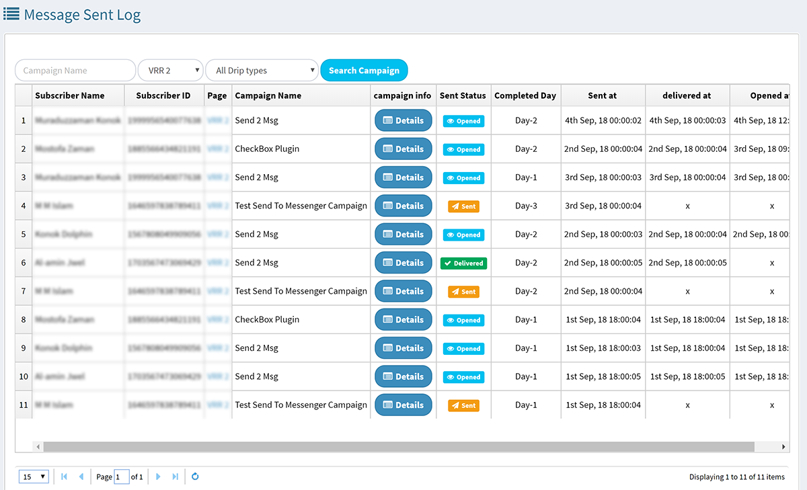Cron Job
Cron job command will like something like this:
curl https://example.com/drip_messaging/drip_messaging_cron/PUT_API_KEY